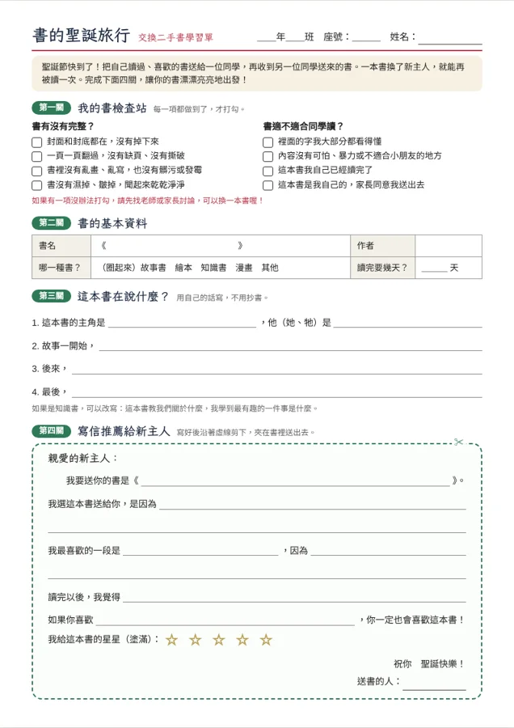

活動怎麼進行
以 12/23 舉辦典禮為例，大約提前三週開始。
- 約三週前發家長通知用下面的範本，填好日期就能貼到 LINE 群組或聯絡簿。
- 交書期限前帶書、寫學習單孩子檢查書況、整理內容，寫一封推薦信夾在書裡，把書包好交給老師。
- 典禮前準備典禮網頁貼上全班名單，幫每本書找封面或拍照。
- 典禮當天書的聖誕旅行投影典禮網頁，一本一本揭曉新主人，全班一起點亮聖誕樹。
三樣工具
都不用註冊、不用安裝，打開就能用。
典禮當天
打開典禮網頁
典禮網頁
- 老師按「交換」，兩個禮物飛上天，聖誕老人駕雪橇送來，揭曉書和新主人。
- 隨機配對，不會拿到自己的書，也不會兩個人互換，一路接力到全班換完。
- 輸入 ISBN 或書名自動找封面，找不到就拍照或上傳。有背景音樂和音效。
- 名單和照片只存在當下那台電腦的那個瀏覽器，換一個就會不見，準備和典禮請用同一台。

交書前
下載 PDF
學習單（PDF）
A4 單面一頁，共四關：
- 我的書檢查站：書況完整、適合三年級
- 書的基本資料
- 這本書在說什麼
- 寫信推薦給新主人（剪下夾在書裡）
約三週前
給家長的訊息
填好下面四格，訊息會自動更新，按「複製訊息」就能貼到 LINE 群組或聯絡簿。
小提醒
包書
歡迎用漂亮的包裝紙；沒有的話用報紙包也可以，只要包牢。在家不方便包，可以帶到學校一起包。
找不到書的孩子
請家長私下告訴老師，一起想辦法，讓每個孩子都能參加。
書況檢查
學習單第一關有 8 個勾選項目，有一項打不了勾，就先和老師或家長討論換一本。
© 2026 老師媽咪／范范老師 書的聖誕旅行